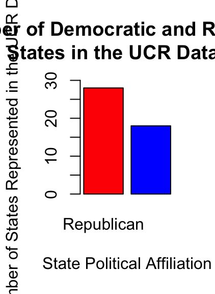

Final Project
Investigating the Relationship Between Political Leaning and the Type/Frequency of Criminal Activity on University Campuses Across the United States
Theodora Athanitis, Tori Borlase, Halle Wasser CRIM 250: Statistics for the Social Sciences Dr. Maria Cuellar December 12, 2021
Research Motivation and Question
As college students, the topic of crime on campus is very relevant to us in terms of public safety. Additionally, as all three of us are female students, certain crime types such as those of a violent or sexual nature feel more relevant and concerning. As recent articles in the Daily Pennsylvanian discuss, crime and crime reporting have become more salient to students as classes move back in-person (Perlman, 2021). In light of the return to campus, we feel as though students should be aware of the rates and types of crimes that are most frequent, as well as the factors that impact crime rates on college campuses. Additionally, some studies show that peoples’ perceptions of crime differ depending on their political leanings (Gramlich, 2016). Therefore, our research question is as follows: Does the political leaning (Democratic or Republican) of states affect either the crime type or the frequency of criminal activity on the campuses of public universities in that state? Our question and dataset are interesting because we can 1) help students be more aware of crimes that are highly relevant to them and 2) test whether there is a correlation between political beliefs and actual reported crime, or if future research is necessary to determine if the disparities between crime perceptions are due to other factors. With our analysis, we should be able to shed light on our research question as well as help improve our understanding of topics that are particularly relevant to us. Our hypothesis is that, in states with Republican political leanings, crime will be higher because Republican states may place a greater emphasis on policing and dedicate more resources to monitoring crime.
Exploratory Data Analysis
Description of the Dataset
The UCR Table 9 dataset (“Offenses Known to Law Enforcement by State by University and College”, 2019) is a voluntary reporting collection composed of 569 observations on 14 variables. The variables in the dataset are: state, university.college, Campus, student.enrollment, violent.crime, murder, rape, robbery, aggravated.assault, property.crime, burglary, larceny.theft, motor.vehicle.theft, and arson (please refer to Appendix A for the codebook), with each observation corresponding to an in-state university or college. It is important to note that these observations were not evenly distributed across states; rather, some states had observations for only one in-state university, while others had observations for more than 5.
Missing Values
Within the dataset, there were many missing values for the “arson” variable. This may be because it is a relatively uncommon crime on college campuses; while some institutions chose to denote a lack of arson with “0”, others may have chosen to simply not report a value. There were four states that were not included in the dataset (namely, Alabama, Idaho, Hawaii, and Oregon) because they either did not release complete 12 month data or they did not release any data at all. Additional Data For our analysis, we created several new tables to create our EDA plots and to utilize for our linear regressions. The table used for the majority of our analysis is composed of 46 observations on 13 variables, with each observation representing the states with reported data (omitting Alabama, Idaho, Hawaii, and Oregon). The added variables in these datasets are state.leaning (a binary variable that represents the political affiliation the state had in the 2016 presidential election; 0=democratic and 1= republican) and total (an integer variable that is the summation of all crimes committed in the state; i.e., the sum of all crimes in all participating in-state institutions within a state).
Load the data.
library(readr)
library(knitr)
dat <- read.csv(file = 'FinalProjectData.csv')
dat5 <- read.csv(file = 'FinalProjectData5.csv')Breakdown of Political Leaning
Within the UCR Dataset, and of the 46 states that reported data about crime on college campuses, we found that a majority were Republican as determined by the 2016 election results. With 28 Republican states and only 18 Democratic ones, this discrepancy is an important consideration given that our analysis compares the differences in crime rates between these two categories of states on average. This means that a smaller number of states skews the average number of crimes generated during the regression analysis significantly, despite relative consistencies in the number of colleges/populations on average between the two political affiliations. The takeaway of this plot is that there were more Republican states than Democratic states reporting; therefore, we should be cognizant that our conclusions may reflect this disparity.y = data.frame(Political_Leaning=c('Republican', 'Democratic'),Number=c(28,18))
colours = c("red", "blue")
w <- c(0.05, 0.05)
barplot(y$Number, width = w, main='Number of Democratic and Republican
States in the UCR Dataset', ylab='Number of States Represented in the UCR Dataset', xlab='State Political Affiliation', names.arg=y$Political_Leaning, col=colours, ylim=c(0,30)) Figure 1. Bar Graph of the Number of Democratic and Republican States in the UCR Table 9 Dataset.
Frequencies of Crime Types
The following bar graph shows the frequencies of different types of crimes reported in both Democratic and Republican states. As shown in Figure 2, there were more crimes in Republican states for all but one category of crime (aggravated assault). However, we should keep in mind that there were significantly more Republican states that reported crime data to the UCR, and that our dataset did not contain information about the population of states, therefore it is difficult to contextualize these results. Based on these differences, we might expect that our model and causal analysis will show that Republican states have higher amounts of crime.counts5 <- t(as.matrix(dat5[-1]))
counts5## [,1] [,2] [,3] [,4] [,5] [,6] [,7] [,8] [,9] [,10]
## X0 1420 214 47092 22796 2 736 20223 1837 82 646
## X1 1481 211 52346 25404 5 957 22423 2028 58 5colnames(counts5) <- dat5$crime_type
colours = c("blue", "red")
barplot(counts5, main='Frequency of Crime Type by Political Leaning', ylab='Count of Criminal Offenses', xlab='Crime Type',beside = TRUE,
col=colours, ylim=c(0,max(counts5)*1))
legend('topright',fill=colours,legend=c('Democratic States','Republican States')) Figure 2. Bar graph of the number and type of crimes at college campuses in Democratic and Republican states.
Figure 2. Bar graph of the number and type of crimes at college campuses in Democratic and Republican states.
Modeling the Data
As a preliminary step in assessing the relationship between the total crime variable and the binary state.leaning variable, we first found the correlation between the two variables to be -0.1245639.
# Correlation between Crime and Political Affiliation
cor(dat$State.Leaning, dat$Total)## [1] -0.1245639Despite this negative result, we further explored this relationship by regressing total crime on state.leaning. This analysis found that the average number of crimes on college campuses annually is 5280 total crimes Democratic States and 3767 in Republican States. However, we also found that both the equal variance assumption and the normal population assumption were not met, therefore invalidating this model to assess this relationship with the data in its current form (refer to Appendix B for diagnostic plots).
# Total Crime Regression
reg.output <- lm(dat$Total ~ dat$State.Leaning, data = dat)
summary(reg.output)##
## Call:
## lm(formula = dat$Total ~ dat$State.Leaning, data = dat)
##
## Residuals:
## Min 1Q Median 3Q Max
## -4901.4 -3097.1 -1587.2 698.5 30250.6
##
## Coefficients:
## Estimate Std. Error t value Pr(>|t|)
## (Intercept) 5280 1417 3.726 0.000551 ***
## dat$State.Leaning -1513 1816 -0.833 0.409484
## ---
## Signif. codes: 0 '***' 0.001 '**' 0.01 '*' 0.05 '.' 0.1 ' ' 1
##
## Residual standard error: 6012 on 44 degrees of freedom
## Multiple R-squared: 0.01552, Adjusted R-squared: -0.006858
## F-statistic: 0.6935 on 1 and 44 DF, p-value: 0.4095plot(reg.output)


# Linearity Assumption:
plot(dat$State.Leaning, reg.output$residuals, main="Residuals vs. x", xlab="x, Political Leaning", ylab="Residuals")
abline(h = 0, lty="dashed")
plot(reg.output, which=1)
# Independence Assumption: using Residuals vs. x plotted above
plot(dat$State.Leaning, dat$Total, main="Relationship between crime and political leaning",
xlab="Political Leaning", ylab="Number of criminal offences")
abline(reg.output, col = "red", lwd=2)
# Equal Variance Assumption/ Homoscedasticity:
plot(reg.output, which=3)
# Normal Population Assumption:
plot(reg.output, which=2)
plot(reg.output, which=5)
Linearity Assumption: This assumption is met. The residuals vs. x plot has a horizontal direction and does have a significant pattern in the data. Furthermore, the residuals vs fitted plot is fairly horizontal and flat, meaning that there is no discernible non-linear trend to the residuals.
Independence Assumption: This assumption is also met for the same reason as the linearity assumption as the residuals vs. x plot has a horizontal direction and does have a significant pattern in the data, as well as because there does not seem to be a time-series component to the data.
Equal Variance Assumption/ Homoscedasticity: This assumption is not met. The scatter plot of crimes vs. political affiliation has no variations with shrinkage in the plot. Additionally, there are significant negative trends, based on the size of the data, shown by the line in the scale-location plot showing that the errors do not have a constant variance.
Normal Population Assumption: This assumption is not met since the q-q plot has significant left skew deviations and is heavy-tailed for the values in this plot.
As these assumptions are not met, normally the next step would be to use the box-cox method to find the best transformation for this data, transform the x variable, and repeat this process. However, as the p-value was so large at 0.4095, demonstrating that this relationship is not statistically significant, we instead concluded that we cannot reject the null hypothesis and instead explored whether or not this relationship existed for a particular crime type variable.
For the rape and violent crime regression it was found that the average number of rapes on college campuses in Democratic states is 2616.2 and 1868.5 in Republican states, and the average number of violent crimes in Democratic states is 78.89 and 52.89 for Republican states. Unfortunately, the two variables that we explored also had significant p-values of 0.4116 and 0.2967, respectively, and we therefore concluded that we cannot reject the null hypothesis for these individual variables either.
# Rape regression
reg.output1 <- lm(dat$Rape ~ dat$State.Leaning, data = dat)
summary(reg.output1)##
## Call:
## lm(formula = dat$Rape ~ dat$State.Leaning, data = dat)
##
## Residuals:
## Min 1Q Median 3Q Max
## -2427.2 -1536.8 -780.4 348.2 14986.8
##
## Coefficients:
## Estimate Std. Error t value Pr(>|t|)
## (Intercept) 2616.2 702.8 3.723 0.000557 ***
## dat$State.Leaning -746.7 900.8 -0.829 0.411605
## ---
## Signif. codes: 0 '***' 0.001 '**' 0.01 '*' 0.05 '.' 0.1 ' ' 1
##
## Residual standard error: 2982 on 44 degrees of freedom
## Multiple R-squared: 0.01538, Adjusted R-squared: -0.007001
## F-statistic: 0.6872 on 1 and 44 DF, p-value: 0.4116# Violent Crime Regression
reg.output2 <- lm(dat$Violent.crime ~ dat$State.Leaning, data = dat)
summary(reg.output2)##
## Call:
## lm(formula = dat$Violent.crime ~ dat$State.Leaning, data = dat)
##
## Residuals:
## Min 1Q Median 3Q Max
## -77.89 -46.64 -19.39 31.11 417.11
##
## Coefficients:
## Estimate Std. Error t value Pr(>|t|)
## (Intercept) 78.89 19.20 4.108 0.000171 ***
## dat$State.Leaning -26.00 24.62 -1.056 0.296690
## ---
## Signif. codes: 0 '***' 0.001 '**' 0.01 '*' 0.05 '.' 0.1 ' ' 1
##
## Residual standard error: 81.48 on 44 degrees of freedom
## Multiple R-squared: 0.02472, Adjusted R-squared: 0.002556
## F-statistic: 1.115 on 1 and 44 DF, p-value: 0.2967While this analysis does not show a relationship between crime frequency on college campuses and the political affiliation of the state in which it is located, this relationship may exist in an indirect fashion and is not represented in this dataset due to other causal factors that we will discuss in the following sections.
Causal Analysis
Causal Factors
As a reminder, our question of interest was if there was a relationship between state political leaning and crime on college campuses. We selected to not conduct a causal analysis given our low p-values in our regression analysis, especially because many other factors could cause crime to increase or decrease, and we are unable to answer a causal question with observational data. There may be other causal mediators that could change crime on college campuses other than a direct effect of the political leanings of the state in which the college is located. As seen in our DAG below, while there may be a direct relationship between our main variables of interest, political affiliations may also impact police funding, social program funding, reporting standards, and open carry laws (to name a few), which may in turn be the true cause of different crimes and their frequencies. The DAG below shows those relationships, and especially given our low p-values, we should be cautious in making any causal assessments for our specific research question.
Figure 3. Directed Acyclic Graph of the relationship between state political party affiliation, crime type and frequency on campus, and other intermediary factors.
Final Discussion
Overall, our regression analysis failed all but two of the assumption tests as well as returning relatively high p-values. We are unable to reject the null hypothesis that political affiliation of states has no impact on the crime type or frequency on college campuses. When analyzing our DAG, it is important to consider which internal nodes have causal effects and the degree to which these nodes influence the potential for a causal relationship. Although our analysis may suggest that there is no causal relationship between our variables of interest, it is clear that the relationship might still exist. In order to reach a conclusion, a discussion of our method’s limitations is warranted, as well as future research suggestions to avoid similar issues.
Limitations
Along with the limitations discussed above regarding the incomplete reporting data and the inclusion of more Republican states, there are other key limitations that need to be addressed. Firstly, California and Texas were significant outliers given that they not only had the most in-state institutions voluntarily report but the institutions within these states also had larger student enrollments. Given that our regression analysis results show the number of crimes on average, any state/institution with a larger student enrollment would skew the average for each state, shifting the representative sample of the states within each political affiliation group. Another limitation of our method is that we only utilized 2016 election results to assign political alignment rather than placing the state on a spectrum of the percentage of votes for a certain party. Because of this, the state.leaning variable was binary, which might explain why our linear regression model did not satisfy any of the assumptions. While one might question why we chose to keep this variable as binary, rather than switching to a spectrum before completing our analysis, the existence of swing states would have made it difficult to analyze the results. If states were hovering near 50%, it would be difficult to determine the influence of political affiliation on perceptions of crime and policing. Future Research Recommendations
Although the results of our analysis suggest that a state’s political leaning does not influence the type of frequency of crime on in-state university campuses, this determination is far from sufficient to rule out the possibility of relationship. Based on our study’s limitations, it would be beneficial to analyze three different categories of states: (1) Republican stronghold states, (2) Democratic stronghold states, and (3) swing states. This political breakdown, along with a discussion of the changes in crime rates on college campuses within these states for the year directly following an election may better explain the relationship between political affiliation and crime type and frequency of in-state institutions. Another suggestion would be standardizing the data points collected by looking at crime rates per capita and including population and campus size information such that we are able to compare universities of equal student-enrollment. In other words, data points need to be standardized in order to control for confounding variables, such as the environment (urban vs. rural campus, the campus having its own police force, etc.). Lastly, we would suggest utilizing the campus’ political leaning, rather than the political leaning of the state where the college is located given that these political leanings may conflict, especially in swing states. These method recommendations lend themselves to better answer the research question of interest.
Concluding Remarks
In conclusion, our data analysis showed that there was no statistically significant correlation between state political leaning and crime types and frequencies on college campuses. Given that our data was observational, we were unable to conduct a proper causal analysis, and we hope that future research in this field can further explore both correlation and causal relationships between our two variables of interest.
References
Federal Bureau of Investigation. (2019). 2019 Crime in the United States: Table 9, Offenses Known to Law Enforcement by State by University and College, 2019. U.S. Department of Justice FBI: UCR. https://ucr.fbi.gov/crime-in-the-u.s/2019/crime-in-the-u.s.-2019/topic-pages/tables/table-9/table-9.xls/view.
Gramlich, J. (2016, November 16). Voters’ perceptions of crime continue to conflict with reality. Pew Research Center. https://www.pewresearch.org/fact-tank/2016/11/16/voters-perceptions-of-crime-continue-to-conflict-with-reality/.
Perlman, L. (2021, November 4). 3 crimes, 0 alerts: A look into Penn’s crime reporting system. The Daily Pennsylvanian. https://www.thedp.com/article/2021/11/penn-alerts-clery-crimes-reporting-system.
Appendix A Codebook: Variable Names and Relevant Definitions state Full name of the state where the college campus is located university.college Full name of college or university Campus Individual campus name where applicable- ex. California State University ‘Bakersfield’, if inapplicable a value of N/A is inputted student.enrollment Integer variable based on 2018 United States Department of Education enrollment reports that includes both undergraduate and graduate populations where applicable
The following variables are based on the local definition of the crime in the given jurisdiction- the only exceptions are included below. violent.crime murder This variable includes both murder and non-negligent manslaughter rape This definition is based on the 2017 UCR revised defintion of rape that removes the variable of ‘forcible’ from the classification robbery aggravated.assault property.crime burglary larceny.theft motor.vehicle.theft arson